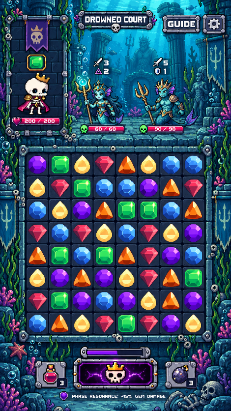
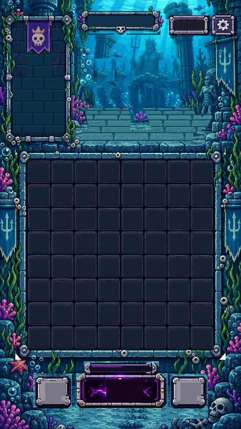
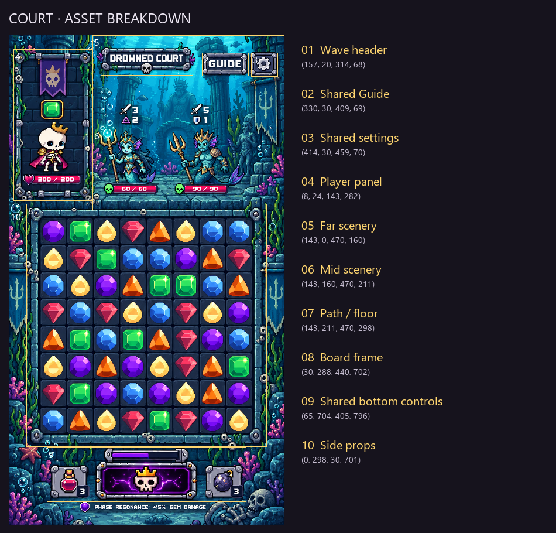

The surfaces hidden by the merfolk are reconstructed from source ruin textures and traced paving courses. Paving in those areas is more regular than the visible reference stones.
Zero generations. Native PNGs and reopened LibreSprite files checked pixel-for-pixel. Technical checks establish file properties, not visual approval.
Overlay


Breakdown

Native assets
One PNG pixel per CSS pixel at 100% browser zoom. Dimensions and palette counts are verified from individual files.